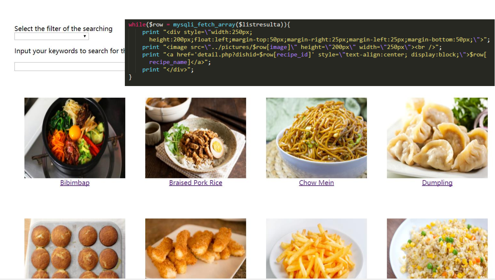
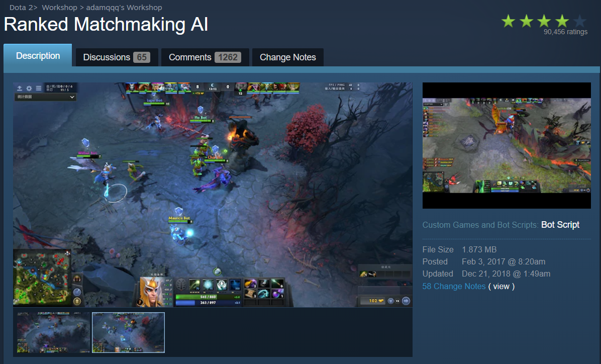

This is my first internship, as I was a third-year undergraduate student in Beijing University of Posts and Telecommunications. This project is for mining data signaling data provided by China Mobile Communications Corporation which contains millions of phone calls signaling information, and analyze to find out main infuential attributes to the quality of service. With guide from Professor Yongfeng Huang, as well as many other PhD students in the lab, I performed data mining analysis using an independently-developed algorithm based on cluster and correlation algorithms, thus summarized attributes that influence CMCC’s Quality of Service and found relations of these attributes. I individually illustrated analysis results with visible charts on html files on web servers using JavaScript D3.js library.
This project is my Masters' Capstone Project. UT iSchool and Microsoft Research have signed a 18-month collaboration project about image captioning. We will collect a new dataset containing images taken by people with visual impairments, and together with human-generated captions. Then we will use the new dataset as the training/validation data to train a state-of-the-art machine image captioing algorithm based on a Convolution Neural Network for image recogniton and a Recurrent Neural Network for words generation. We will also evaluate and compare standard captioning evaluation metrics like BLEU, ROGUE, METEOR, CIDEr, SPICE.

Database Project: Chinese food recipes
This is my semester project of my course Database Management. Our group used MySQL to store and manage databases of recipes of a series of traditional Chinese foods, including ingredients, styles and cuisines. We also designed and implemented a website to present the recipes via HTML and PHP.
User Generated Content Analytics: Research on Fundraising Result Prediction(Image Analytics)
This is the semester project of my course User Generated Content Analytics. We used Python to scrape data about crowdfunding projects with images online. We Used Google Vision Label Detection and TF-IDF method to quantify the images, and used Logistic Regression to research on the correlations between total raised funds of online crowdfunding projects and the images these projects provide. We found that projects that contain images have 13% raised money, compaired with projects with only text descriptions.
Implement Transfer Learning for Kaggle’s Doodle Recognition Challenge
This is my final project of the course Machine Learning. We joined one of the Kaggle Competition: Google "Quick, draw!" Doodle Recognition Challenge. We used transfer learning which added a fully-connected layer to the Inception V3 model to let the model fit with hand-drawn doodle images recognition problem. We used a convolution neural network to train the model with 6.8 million doodle images and predict top 3 categories of test doodle images. Our model achieve over 70% of top3 accuracy, and win first prize of final project in our class.
This is a final project for my course Enterprise Management when I was a sophomore student. I led a team of 6 to perform internal, external and policy analysis of Cisco Systems, Inc. Analyzed data of Cisco's annual reports in the last 10 years using Excel and MATLAB, to analyze the tendency of Cisco's sale, market shares and profit.

Dota2 AI Script: Ranked Matchmaking AI
This is a project of my interest. I love play Dota2, and this project is an AI script to make bots of Dota2 smarter and stronger to compete with human players. Our project aims to provide a great tool for Dota2 players to have fun and practice their skill fighting with and against our AI. I am a contributor to this project with tens of commits. Currently, our scripts have 1.65 million subscribers, ranking No.1 at Steam Dota2 Workshop Community.